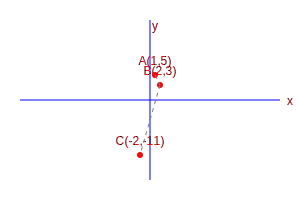
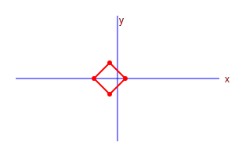
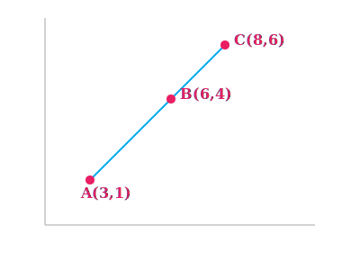
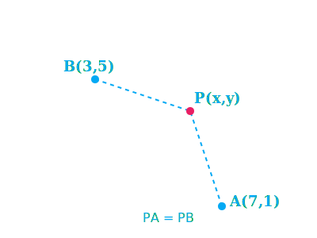
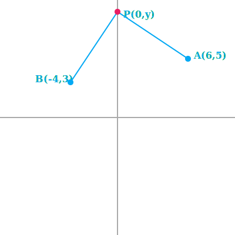
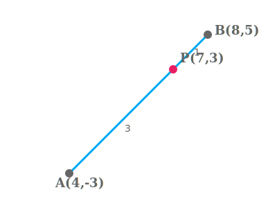
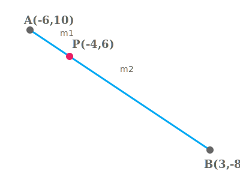
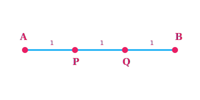
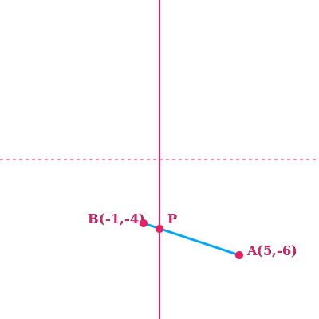
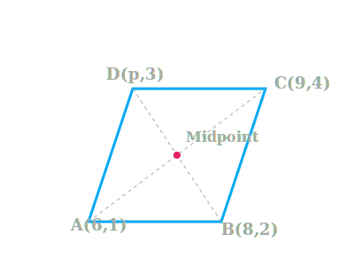

EXERCISE1
Chapter 7: Exercise 7.1
1. Find the distance between the following pairs of points:
(i) (2, 3), (4, 1)

Let \(P(2, 3)\) and \(Q(4, 1)\).
Distance \(PQ = \sqrt{(x_2 - x_1)^2 + (y_2 - y_1)^2}\)
\(= \sqrt{(4 - 2)^2 + (1 - 3)^2}\)
\(= \sqrt{2^2 + (-2)^2}\)
\(= \sqrt{4 + 4}\)
\(= \sqrt{8} = \sqrt{4 \times 2} = 2\sqrt{2}\)
Distance = \(2\sqrt{2}\) units.
(ii) (-5, 7), (-1, 3)

Let \(P(-5, 7)\) and \(Q(-1, 3)\).
Distance \(PQ = \sqrt{(-1 - (-5))^2 + (3 - 7)^2}\)
\(= \sqrt{4^2 + (-4)^2}\)
\(= \sqrt{16 + 16}\)
\(= \sqrt{32} = \sqrt{16 \times 2} = 4\sqrt{2}\)
Distance = \(4\sqrt{2}\) units.
(iii) (a, b), (-a, -b)

Let \(P(a, b)\) and \(Q(-a, -b)\).
Distance \(PQ = \sqrt{(-a - a)^2 + (-b - b)^2}\)
\(= \sqrt{(-2a)^2 + (-2b)^2}\)
\(= \sqrt{4a^2 + 4b^2}\)
\(= \sqrt{4(a^2 + b^2)} = 2\sqrt{a^2 + b^2}\)
Distance = \(2\sqrt{a^2 + b^2}\) units.
2. Find the distance between the points (0, 0) and (36, 15). Can you now find the distance
between the two towns A and B discussed in Section 7.2?

Let \(A(0, 0)\) and \(B(36, 15)\).
Distance \(AB = \sqrt{(36 - 0)^2 + (15 - 0)^2}\)
\(= \sqrt{36^2 + 15^2}\)
\(= \sqrt{1296 + 225}\)
\(= \sqrt{1521} = 39\)
The distance is 39 units.
Yes, the distance between the two towns A and B is 39 km.
3. Determine if the points (1, 5), (2, 3) and (-2, -11) are collinear.

Let \(A(1, 5)\), \(B(2, 3)\), \(C(-2, -11)\).
\(AB = \sqrt{(2-1)^2 + (3-5)^2} = \sqrt{1^2 + (-2)^2} = \sqrt{1 + 4} = \sqrt{5} \approx 2.23\)
\(BC = \sqrt{(-2-2)^2 + (-11-3)^2} = \sqrt{(-4)^2 + (-14)^2} = \sqrt{16 + 196} = \sqrt{212}
\approx 14.56\)
\(AC = \sqrt{(-2-1)^2 + (-11-5)^2} = \sqrt{(-3)^2 + (-16)^2} = \sqrt{9 + 256} = \sqrt{265}
\approx 16.27\)
Check if sum of two smaller equals largest:
\(AB + BC = 2.23 + 14.56 = 16.79\)
This is not equal to \(AC\) (16.27).
Therefore, the points are NOT collinear.
4. Check whether (5, -2), (6, 4) and (7, -2) are the vertices of an isosceles triangle.

Let \(A(5, -2)\), \(B(6, 4)\), \(C(7, -2)\).
\(AB = \sqrt{(6-5)^2 + (4-(-2))^2} = \sqrt{1^2 + 6^2} = \sqrt{1 + 36} = \sqrt{37}\)
\(BC = \sqrt{(7-6)^2 + (-2-4)^2} = \sqrt{1^2 + (-6)^2} = \sqrt{1 + 36} = \sqrt{37}\)
\(AC = \sqrt{(7-5)^2 + (-2-(-2))^2} = \sqrt{2^2 + 0^2} = \sqrt{4} = 2\)
Since \(AB = BC = \sqrt{37}\), two sides are equal.
Yes, they are vertices of an isosceles triangle.
5. In a classroom, 4 friends are seated at points A(3, 4), B(6, 7), C(9, 4) and D(6, 1).
Champa and Chameli walk into the class and after observing for a few minutes Champa asks Chameli, “Don’t you
think ABCD is a square?” Chameli disagrees. Using distance formula, find which of them is correct.

\(A(3, 4)\), \(B(6, 7)\), \(C(9, 4)\), \(D(6, 1)\).
\(AB = \sqrt{(6-3)^2 + (7-4)^2} = \sqrt{3^2 + 3^2} = \sqrt{18} = 3\sqrt{2}\)
\(BC = \sqrt{(9-6)^2 + (4-7)^2} = \sqrt{3^2 + (-3)^2} = \sqrt{18} = 3\sqrt{2}\)
\(CD = \sqrt{(6-9)^2 + (1-4)^2} = \sqrt{(-3)^2 + (-3)^2} = \sqrt{18} = 3\sqrt{2}\)
\(DA = \sqrt{(3-6)^2 + (4-1)^2} = \sqrt{(-3)^2 + 3^2} = \sqrt{18} = 3\sqrt{2}\)
All sides are equal. Now check diagonals.
\(AC = \sqrt{(9-3)^2 + (4-4)^2} = \sqrt{6^2 + 0^2} = \sqrt{36} = 6\)
\(BD = \sqrt{(6-6)^2 + (1-7)^2} = \sqrt{0^2 + (-6)^2} = \sqrt{36} = 6\)
Diagonals are also equal. Since all sides and both diagonals are equal, ABCD is a square.
Conclusion: Champa is correct.
6. Name the type of quadrilateral formed, if any, by the following points, and give
reasons for your answer:
(i) (-1, -2), (1, 0), (-1, 2), (-3, 0)

Let \(A(-1,-2), B(1,0), C(-1,2), D(-3,0)\).
\(AB = \sqrt{(1-(-1))^2 + (0-(-2))^2} = \sqrt{2^2 + 2^2} = \sqrt{8} = 2\sqrt{2}\)
\(BC = \sqrt{(-1-1)^2 + (2-0)^2} = \sqrt{(-2)^2 + 2^2} = \sqrt{8} = 2\sqrt{2}\)
\(CD = \sqrt{(-3-(-1))^2 + (0-2)^2} = \sqrt{(-2)^2 + (-2)^2} = \sqrt{8} = 2\sqrt{2}\)
\(DA = \sqrt{(-1-(-3))^2 + (-2-0)^2} = \sqrt{2^2 + (-2)^2} = \sqrt{8} = 2\sqrt{2}\)
All sides are equal. Now checking diagonals:
\(AC = \sqrt{(-1-(-1))^2 + (2-(-2))^2} = \sqrt{0^2 + 4^2} = 4\)
\(BD = \sqrt{(-3-1)^2 + (0-0)^2} = \sqrt{(-4)^2 + 0^2} = 4\)
Diagonals are equal.
Thus, the quadrilateral is a square.
(ii) (-3, 5), (3, 1), (0, 3), (-1, -4)

Let \(A(-3,5), B(3,1), C(0,3), D(-1,-4)\).
\(AB = \sqrt{(3-(-3))^2 + (1-5)^2} = \sqrt{6^2 + (-4)^2} = \sqrt{36 + 16} = \sqrt{52} =
2\sqrt{13}\)
\(BC = \sqrt{(0-3)^2 + (3-1)^2} = \sqrt{(-3)^2 + 2^2} = \sqrt{9 + 4} = \sqrt{13}\)
\(AC = \sqrt{(0-(-3))^2 + (3-5)^2} = \sqrt{3^2 + (-2)^2} = \sqrt{9 + 4} = \sqrt{13}\)
Here, \(AC + BC = \sqrt{13} + \sqrt{13} = 2\sqrt{13} = AB\).
Since sums of two distances equals the third, the points are collinear.
Therefore, no quadrilateral is formed.
(iii) (4, 5), (7, 6), (4, 3), (1, 2)

Let \(A(4,5), B(7,6), C(4,3), D(1,2)\).
\(AB = \sqrt{10}\), \(BC = 3\sqrt{2}\), \(CD = \sqrt{10}\), \(DA = 3\sqrt{2}\).
Opposite sides are equal. It is a parallelogram or rectangle.
Check diagonals:
\(AC = 2\), \(BD = \sqrt{52}\).
Diagonals are unequal.
Thus, it is a Parallelogram.
7. Find the point on the x-axis which is equidistant from (2, -5) and (-2, 9).

Let point be \(P(x, 0)\). \(A(2, -5)\), \(B(-2, 9)\).
\(PA = PB \Rightarrow PA^2 = PB^2\)
\((x - 2)^2 + (0 - (-5))^2 = (x - (-2))^2 + (0 - 9)^2\)
\((x - 2)^2 + 25 = (x + 2)^2 + 81\)
\(x^2 - 4x + 4 + 25 = x^2 + 4x + 4 + 81\)
\(-4x - 4x = 81 - 25\)
\(-8x = 56 \Rightarrow x = -7\)
Therefore, the point is (-7, 0).
8. Find the values of y for which the distance between the points P(2, -3) and Q(10, y) is
10 units.

Given \(PQ = 10 \Rightarrow PQ^2 = 100\).
\((10 - 2)^2 + (y - (-3))^2 = 100\)
\(8^2 + (y + 3)^2 = 100\)
\(64 + (y + 3)^2 = 100 \Rightarrow (y + 3)^2 = 36\)
\(y + 3 = \pm 6\)
Case 1: \(y + 3 = 6 \Rightarrow y = 3\).
Case 2: \(y + 3 = -6 \Rightarrow y = -9\).
The possible values of y are 3 or -9.
9. If Q(0, 1) is equidistant from P(5, -3) and R(x, 6), find the values of x. Also find
the distances QR and PR.

\(QP = QR \Rightarrow QP^2 = QR^2\).
\((5 - 0)^2 + (-3 - 1)^2 = (x - 0)^2 + (6 - 1)^2\)
\(25 + 16 = x^2 + 25 \Rightarrow x^2 = 16 \Rightarrow x = \pm 4\).
Case 1 (\(x=4\)): \(QR = \sqrt{41}\), \(PR = \sqrt{(4-5)^2 + (6+3)^2} = \sqrt{1 + 81} =
\sqrt{82}\).
Case 2 (\(x=-4\)): \(QR = \sqrt{41}\), \(PR = \sqrt{(-4-5)^2 + (6+3)^2} = \sqrt{81 + 81} =
\sqrt{162} = 9\sqrt{2}\).
\(x = \pm 4\); \(QR = \sqrt{41}\), \(PR = \sqrt{82}\) or \(9\sqrt{2}\).
10. Find a relation between x and y such that the point (x, y) is equidistant from the
point (3, 6) and (-3, 4).

Let \(P(x, y)\), \(A(3, 6)\), \(B(-3, 4)\). \(PA^2 = PB^2\).
\((x - 3)^2 + (y - 6)^2 = (x + 3)^2 + (y - 4)^2\)
\(x^2 - 6x + 9 + y^2 - 12y + 36 = x^2 + 6x + 9 + y^2 - 8y + 16\)
\(-6x - 12y + 45 = 6x - 8y + 25\)
\(-12x - 4y + 20 = 0\)
\(3x + y - 5 = 0\)
The relation is \(3x + y - 5 = 0\).
EXERCISE2
Chapter 7: Exercise 7.2
1. Find the coordinates of the point which divides the join of (-1, 7) and (4, -3) in the
ratio 2 : 3.

Let \(P(x, y)\) divide AB in 2:3. \(A(-1, 7)\), \(B(4, -3)\).
Coordinates \(x = \frac{m_1x_2 + m_2x_1}{m_1 + m_2} = \frac{2(4) + 3(-1)}{2 + 3}\)
\(x = \frac{8 - 3}{5} = \frac{5}{5} = 1\)
\(y = \frac{m_1y_2 + m_2y_1}{m_1 + m_2} = \frac{2(-3) + 3(7)}{2 + 3}\)
\(y = \frac{-6 + 21}{5} = \frac{15}{5} = 3\)
Point P is (1, 3).
2. Find the coordinates of the points of trisection of the line segment joining (4, -1)
and (-2, -3).

Let A(4, -1) and B(-2, -3). Points P, Q trisect AB.
P divides AB in 1:2.
\(x_P = \frac{1(-2) + 2(4)}{3} = \frac{-2 + 8}{3} = 2\)
\(y_P = \frac{1(-3) + 2(-1)}{3} = \frac{-3 - 2}{3} = -\frac{5}{3}\)
Q divides AB in 2:1.
\(x_Q = \frac{2(-2) + 1(4)}{3} = \frac{-4 + 4}{3} = 0\)
\(y_Q = \frac{2(-3) + 1(-1)}{3} = \frac{-6 - 1}{3} = -\frac{7}{3}\)
P(2, -5/3), Q(0, -7/3).
3. To conduct Sports Day activities, in your rectangular shaped school ground ABCD, lines
have been drawn with chalk powder at a distance of 1m each. 100 flower pots have been placed at a distance
of 1m from each other along AD, as shown in Fig. 7.12. Niharika runs 1/4th the distance AD on the 2nd line
and posts a green flag. Preet runs 1/5th the distance AD on the eighth line and posts a red flag. What is
the distance between both the flags? If Rashmi has to post a blue flag exactly halfway between the line
segment joining the two flags, where should she post her flag?

Given: AD = 100m.
Niharika's Green Flag (G): On 2nd line, \(x_1 = 2\). Distance = \(\frac{1}{4}
\times 100 = 25\)m. So, \(y_1 = 25\). G(2, 25).
Preet's Red Flag (R): On 8th line, \(x_2 = 8\). Distance = \(\frac{1}{5}
\times 100 = 20\)m. So, \(y_2 = 20\). R(8, 20).
Distance between flags (GR):
\(GR = \sqrt{(8-2)^2 + (20-25)^2} = \sqrt{6^2 + (-5)^2} = \sqrt{36 + 25} = \sqrt{61}\)m.
Rashmi's Blue Flag (B) is halfway:
\(x = \frac{2+8}{2} = 5\). \(y = \frac{25+20}{2} = 22.5\).
Distance is \(\sqrt{61}\)m. Blue flag at 5th line, 22.5m distance.
4. Determine the ratio in which the line segment joining the points (-3, 10) and (6, -8)
is divided by (-1, 6).

Let ratio be \(k:1\). P(-1, 6).
\(x = \frac{k(6) + 1(-3)}{k + 1} = -1 \Rightarrow 6k - 3 = -k - 1\)
\(7k = 2 \Rightarrow k = \frac{2}{7}\)
Verify with y: \(\frac{2/7(-8) + 10}{2/7 + 1} = \frac{-16/7 + 70/7}{9/7} = \frac{54}{9} = 6\)
(True).
Ratio is 2:7.
5. Find the ratio in which the line segment joining A(1, -5) and B(-4, 5) is divided by
the x-axis. Also find the coordinates of the point of division.

Let ratio be \(k:1\). Point on x-axis: \(P(x, 0)\).
\(y = \frac{k(5) + 1(-5)}{k + 1} = 0 \Rightarrow 5k - 5 = 0 \Rightarrow k = 1\).
Ratio is 1:1.
\(x = \frac{1(-4) + 1(1)}{2} = -\frac{3}{2}\).
Ratio 1:1. Point (-3/2, 0).
6. If (1, 2), (4, y), (x, 6) and (3, 5) are the vertices of a parallelogram taken in
order, find x and y.

Diagonals bisect each other. Midpoint AC = Midpoint BD.
\(\left(\frac{1+x}{2}, \frac{2+6}{2}\right) = \left(\frac{4+3}{2}, \frac{y+5}{2}\right)\)
\(\frac{1+x}{2} = \frac{7}{2} \Rightarrow 1 + x = 7 \Rightarrow x = 6\).
\(\frac{8}{2} = \frac{y+5}{2} \Rightarrow 8 = y + 5 \Rightarrow y = 3\).
x = 6, y = 3.
7. Find the coordinates of a point A, where AB is the diameter of a circle whose centre is
(2, -3) and B is (1, 4).

Let \(A(x, y)\). Centre \(C(2, -3)\) is midpoint of AB.
\(\frac{x+1}{2} = 2 \Rightarrow x + 1 = 4 \Rightarrow x = 3\).
\(\frac{y+4}{2} = -3 \Rightarrow y + 4 = -6 \Rightarrow y = -10\).
A is (3, -10).
8. If A and B are (-2, -2) and (2, -4), respectively, find the coordinates of P such that
AP = 3/7 AB and P lies on the line segment AB.

\(AP = \frac{3}{7}AB \Rightarrow AP:PB = 3:4\).
\(x = \frac{3(2) + 4(-2)}{7} = \frac{6-8}{7} = -\frac{2}{7}\).
\(y = \frac{3(-4) + 4(-2)}{7} = \frac{-12-8}{7} = -\frac{20}{7}\).
P(-2/7, -20/7).
9. Find the coordinates of the points which divide the line segment joining A(-2, 2) and
B(2, 8) into four equal parts.

Midpoint Q of AB = \((0, 5)\).
Midpoint P of AQ = \((-1, 3.5)\) or \((-1, \frac{7}{2})\).
Midpoint R of QB = \((1, 6.5)\) or \((1, \frac{13}{2})\).
The points are (-1, 7/2), (0, 5), (1, 13/2).
10. Find the area of a rhombus if its vertices are (3, 0), (4, 5), (-1, 4) and (-2, -1)
taken in order. [Hint : Area of a rhombus = 1/2 (product of its diagonals)]

\(AC = \sqrt{(-1-3)^2 + (4-0)^2} = \sqrt{16+16} = \sqrt{32} = 4\sqrt{2}\).
\(BD = \sqrt{(-2-4)^2 + (-1-5)^2} = \sqrt{36+36} = \sqrt{72} = 6\sqrt{2}\).
Area = \(\frac{1}{2} \times 4\sqrt{2} \times 6\sqrt{2} = \frac{1}{2} \times 24 \times 2 =
24\).
Area = 24 square units.
EXAMPLES
Coordinate Geometry - Examples
Chapter 7: Solved Examples
Example 1. Do the points (3, 2), (-2, -3) and (2, 3) form a triangle? If so, name the type
of triangle formed.

Let \(P(3, 2)\), \(Q(-2, -3)\) and \(R(2, 3)\).
\(PQ = \sqrt{(-2-3)^2 + (-3-2)^2} = \sqrt{(-5)^2 + (-5)^2} = \sqrt{50} \approx 7.07\)
\(QR = \sqrt{(2-(-2))^2 + (3-(-3))^2} = \sqrt{4^2 + 6^2} = \sqrt{16+36} = \sqrt{52} \approx
7.21\)
\(PR = \sqrt{(2-3)^2 + (3-2)^2} = \sqrt{(-1)^2 + 1^2} = \sqrt{2} \approx 1.41\)
Since sums of any two sides > third, they form a triangle.
Also \(PQ^2 + PR^2 = 50 + 2 = 52 = QR^2\).
Yes, they form a Right-Angled Triangle.
Example 2. Show that the points (1, 7), (4, 2), (-1, -1) and (-4, 4) form a square.

Let \(A(1, 7), B(4, 2), C(-1, -1), D(-4, 4)\).
\(AB = \sqrt{(4-1)^2 + (2-7)^2} = \sqrt{9+25} = \sqrt{34}\)
\(BC = \sqrt{(-1-4)^2 + (-1-2)^2} = \sqrt{25+9} = \sqrt{34}\)
\(CD = \sqrt{(-4-(-1))^2 + (4-(-1))^2} = \sqrt{9+25} = \sqrt{34}\)
\(DA = \sqrt{(1-(-4))^2 + (7-4)^2} = \sqrt{25+9} = \sqrt{34}\)
Diagonals: \(AC = \sqrt{(-1-1)^2 + (-1-7)^2} = \sqrt{4+64} = \sqrt{68}\)
\(BD = \sqrt{(-4-4)^2 + (4-2)^2} = \sqrt{64+4} = \sqrt{68}\)
Since sides are equal and diagonals are equal, it forms a square.
Example 3. Fig. 7.6 shows the arrangement of desks in a classroom. Ashima, Bharti and
Camella are seated at A(3, 1), B(6, 4) and C(8, 6) respectively. Do you think they are seated in a line?
Give reasons for your answer.

Using Distance Formula:
\(AB = \sqrt{(6-3)^2 + (4-1)^2} = \sqrt{3^2 + 3^2} = \sqrt{9+9} = \sqrt{18} = 3\sqrt{2}\)
\(BC = \sqrt{(8-6)^2 + (6-4)^2} = \sqrt{2^2 + 2^2} = \sqrt{4+4} = \sqrt{8} = 2\sqrt{2}\)
\(AC = \sqrt{(8-3)^2 + (6-1)^2} = \sqrt{5^2 + 5^2} = \sqrt{25+25} = \sqrt{50} = 5\sqrt{2}\)
Since \(AB + BC = 3\sqrt{2} + 2\sqrt{2} = 5\sqrt{2} = AC\), the points A, B and C are
collinear.
Yes, they are seated in a line.
Example 4. Find a relation between x and y such that the point (x, y) is equidistant from
the
points (7, 1) and (3, 5).

Let \(P(x, y)\) be equidistant from \(A(7, 1)\) and \(B(3, 5)\).
We are given \(AP = BP\), so \(AP^2 = BP^2\).
\((x - 7)^2 + (y - 1)^2 = (x - 3)^2 + (y - 5)^2\)
\(x^2 - 14x + 49 + y^2 - 2y + 1 = x^2 - 6x + 9 + y^2 - 10y + 25\)
\(x^2 - 14x + y^2 - 2y + 50 = x^2 - 6x + y^2 - 10y + 34\)
\(-14x + 6x - 2y + 10y + 50 - 34 = 0\)
\(-8x + 8y + 16 = 0\)
Dividing by -8: \(x - y - 2 = 0\) or \(x - y = 2\).
Relation is \(x - y = 2\).
Example 5. Find a point on the y-axis which is equidistant from the points A(6, 5) and
B(-4,
3).

We know that a point on the y-axis is of the form \((0, y)\).
Let the point \(P(0, y)\) be equidistant from \(A(6, 5)\) and \(B(-4, 3)\).
\(PA^2 = PB^2\)
\((0 - 6)^2 + (y - 5)^2 = (0 - (-4))^2 + (y - 3)^2\)
\(36 + y^2 - 10y + 25 = 16 + y^2 - 6y + 9\)
\(61 - 10y = 25 - 6y\)
\(-10y + 6y = 25 - 61\)
\(-4y = -36 \Rightarrow y = 9\)
The required point is (0, 9).
Example 6. Find the coordinates of the point which divides the line segment joining the
points
(4, -3) and (8, 5) in the ratio 3 : 1 internally.

Let \(P(x, y)\) divide AB in 3:1.
\(x = \frac{3(8) + 1(4)}{3+1} = \frac{24+4}{4} = \frac{28}{4} = 7\)
\(y = \frac{3(5) + 1(-3)}{3+1} = \frac{15-3}{4} = \frac{12}{4} = 3\)
Point P is (7, 3).
Example 7. In what ratio does the point (-4, 6) divide the line segment joining the points
A(-6, 10) and B(3, -8)?

Let the ratio be \(m_1 : m_2\). Using Section Formula for x-coordinate:
\(-4 = \frac{m_1(3) + m_2(-6)}{m_1 + m_2}\)
\(-4(m_1 + m_2) = 3m_1 - 6m_2\)
\(-4m_1 - 4m_2 = 3m_1 - 6m_2\)
\(2m_2 = 7m_1 \Rightarrow \frac{m_1}{m_2} = \frac{2}{7}\)
Verification for y-coordinate: \(\frac{2(-8) + 7(10)}{2+7} = \frac{-16 + 70}{9} = \frac{54}{9}
=
6\). (Matches).
Ratio is 2:7.
Example 8. Find the coordinates of the points of trisection (i.e., points dividing in
three
equal parts) of the line segment joining the points A(2, -2) and B(-7, 4).

Let P and Q be the points of trisection of AB.
Case 1: P divides AB in ratio 1:2.
\(P = \left( \frac{1(-7) + 2(2)}{1+2}, \frac{1(4) + 2(-2)}{1+2} \right)\)
\(P = \left( \frac{-7+4}{3}, \frac{4-4}{3} \right) = \left( \frac{-3}{3}, 0 \right) = (-1,
0)\)
Case 2: Q divides AB in ratio 2:1.
\(Q = \left( \frac{2(-7) + 1(2)}{2+1}, \frac{2(4) + 1(-2)}{2+1} \right)\)
\(Q = \left( \frac{-14+2}{3}, \frac{8-2}{3} \right) = \left( \frac{-12}{3}, \frac{6}{3}
\right) =
(-4, 2)\)
Points are (-1, 0) and (-4, 2).
Example 9. Find the ratio in which the y-axis divides the line segment joining the points
(5,
-6) and (-1, -4). Also find the point of intersection.

Let the ratio be \(k : 1\). The point on y-axis is \((0, y)\).
x-coordinate = \(0\).
\(\frac{k(-1) + 1(5)}{k+1} = 0\)
\(-k + 5 = 0 \Rightarrow k = 5\). So ratio is 5:1.
Now finding y-coordinate:
\(y = \frac{5(-4) + 1(-6)}{5+1} = \frac{-20 - 6}{6} = \frac{-26}{6} = \frac{-13}{3}\)
Ratio is 5:1 and Point is (0, -13/3).
Example 10. If the points A(6, 1), B(8, 2), C(9, 4) and D(p, 3) are the vertices of a
parallelogram, taken in order, find the value of p.

Diagonals of a parallelogram bisect each other. So midpoint of AC = midpoint of BD.
Midpoint of AC = \(\left( \frac{6+9}{2}, \frac{1+4}{2} \right) = (7.5, 2.5)\)
Midpoint of BD = \(\left( \frac{8+p}{2}, \frac{2+3}{2} \right) = \left( \frac{8+p}{2}, 2.5
\right)\)
Equating x-coordinates:
\(\frac{8+p}{2} = 7.5 \Rightarrow 8+p = 15 \Rightarrow p = 7\).
Value of p is 7.